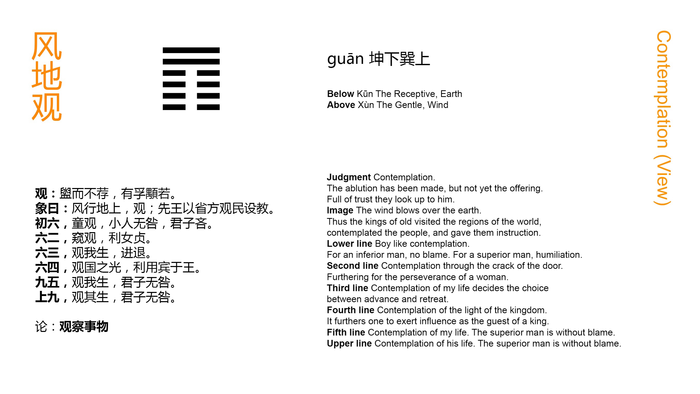

Chinese: 观 ䷓ guān

Guān ䷓ shows (how he whom it represents should be like) the worshipper who has washed his hands, but not (yet) presented his offerings; -- with sincerity and an appearance of dignity (commanding reverent regard).
1. The first SIX, divided, shows the looking of a lad; -- not blamable in men of inferior rank, but matter for regret in superior men.
䷓ changing to ䷩
Matching Line 1 in Adjacent Hexagram: ䷒
2. The second SIX, divided, shows one peeping out from a door. It would be advantageous if it were (merely) the firm correctness of a female.
䷓ changing to ䷺
Matching Line 2 in Adjacent Hexagram: ䷒
3. The third SIX, divided, shows one looking at (the course of) his own life, to advance or recede (accordingly).
䷓ changing to ䷴
Matching Line 3 in Adjacent Hexagram: ䷒
4. The fourth SIX, divided, shows one contemplating the glory of the kingdom. It will be advantageous for him, being such as he is, (to seek) to be a guest of the king.
䷓ changing to ䷋
Matching Line 4 in Adjacent Hexagram: ䷒
5. The fifth NINE, undivided, shows its subject contemplating his own life(-course). A superior man, he will (thus) fall into no error.
䷓ changing to ䷖
Matching Line 5 in Adjacent Hexagram: ䷒
6. The sixth NINE, undivided, shows its subject contemplating his character to see if it be indeed that of a superior man. He will not fall into error.
䷓ changing to ䷇
Matching Line 6 in Adjacent Hexagram: ䷒
The Chinese character 观 (Guān), from which this hexagram is named, is used in it in two senses. In the Tuàn, the first paragraph of the treatise on the Tuàn, and the paragraph on the Great Symbolism, it denotes showing, manifesting; in all other places it denotes contemplating, looking at. The subject of the hexagram is the sovereign and his subjects, how he manifests himself to them, and how they contemplate him. The two upper, undivided, lines belong to the sovereign; the four weak lines below them are his subjects, -- ministers and others who look up at him. Guān ䷓ is the hexagram of the eighth month.
In the Tuàn, King Wén symbolises the sovereign by a worshipper when he is most solemn in his religious service, at the commencement of it, full of sincerity and with a dignified carriage.
Line 1 is weak, and in the lowest place, improper also for it; -- p. 101 the symbol of a thoughtless lad, who cannot see far, and takes only superficial views.
Line 2 is also weak, but in its proper place, showing a woman, living retired, and only able to peep as from her door at the subject of the fifth line. But ignorance and retirement are proper in a woman.
Line 3, at the top of the lower trigram Kūn ☷, and weak, must belong to a subject of the utmost docility, and will wish to act only according to the exigency of time and circumstances.
Line 4, in the place proper to its weakness, is yet in immediate proximity to 5, representing the sovereign. Its subject is moved accordingly, and stirred to ambition.
Line 5 is strong, and in the place of the ruler. He is a superior man, but this does not relieve him from the duty of self-contemplation or examination.
There is a slight difference in the 6th paragraph from the 5th, which can hardly be expressed in a translation. By making a change in the punctuation, however, the different significance may be brought out. Line 6 is strong, and should be considered out of the work of the hexagram, but its subject is still possessed by the spirit of its idea, and is led to self-examination.